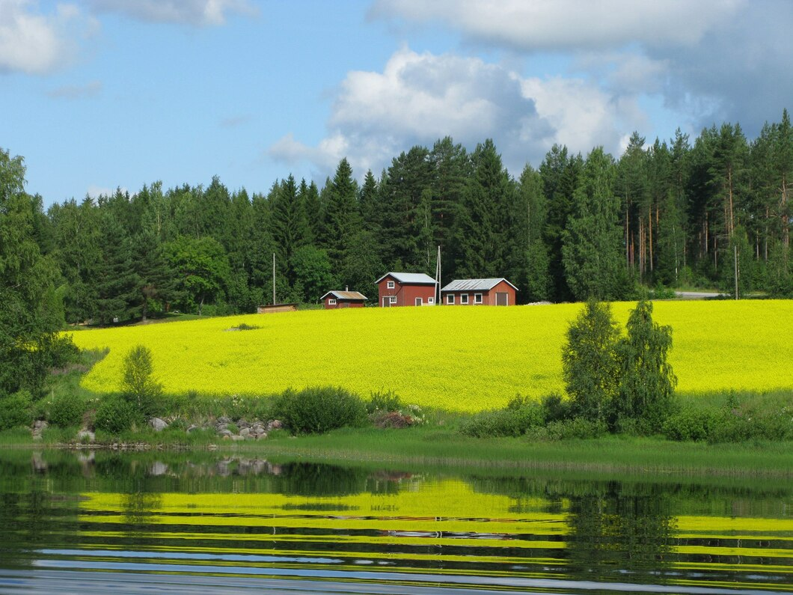
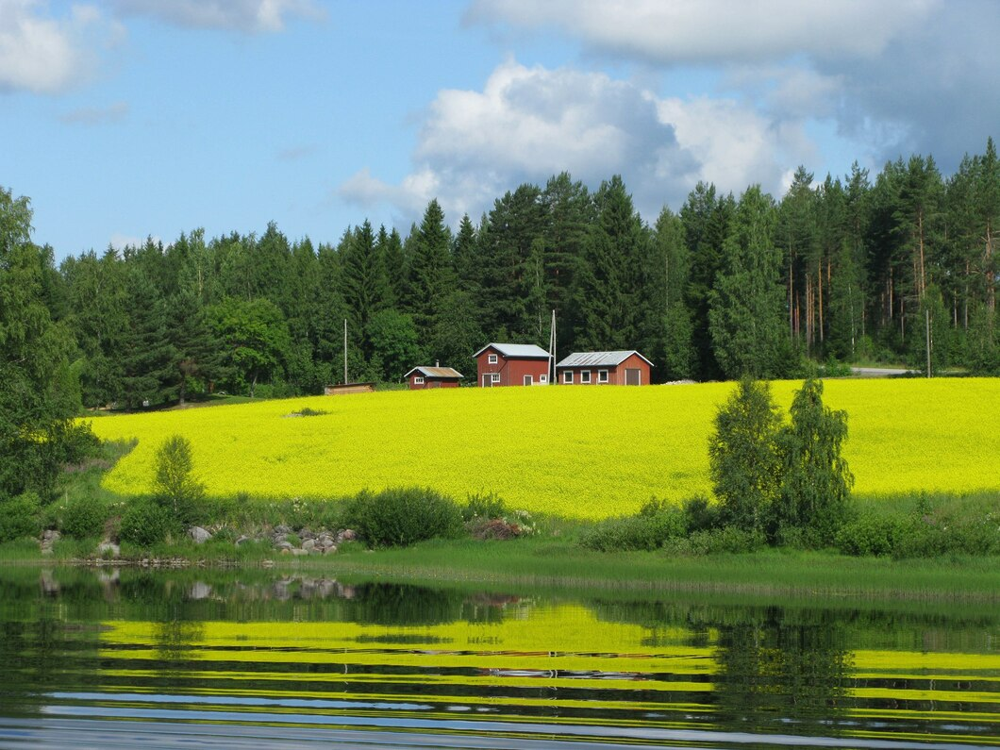

Ружанский дворец
Особенности
Дворцовый комплекс находится в Пружанском районе Брестской области, в д. Ружаны по ул. Урбановича, 15а. Посетить замок можно со среды по пятницу с 9:00 до 18:00, в субботу и воскресенье с 10:00 до 18:00. Понедельник и вторник – выходные дни. Стоимость входного билета составляет 4 рубля – взрослый, цена для школьников, студентов и пенсионеров - 3 рубля. Дети дошкольного возраста могут посетить музей бесплатно.
"Белорусский Версаль"
Один из самых внушительных замков Беларуси, построенный в 1796 году великим литовским канцлером Львом Сапегой. Строился он с оборонительной целью на обширной территории, имел форму креста и три четырёхгранные башни. В главном корпусе находилась парадная зала и вестибюль, к которому вела двусторонняя лестница. Жилые комнаты, кабинет и библиотека располагались в боковых пристройках.
Спустя несколько лет дворец в Ружанах пополнился новыми строениями: костёлом, монастырём базилиан, часовней и трактиром. А на его территории появляется роскошный парк с водоёмами, каналами и даже зверинцем. Сама цитадель была перестроена до неузнаваемости и превратилась в роскошный дворец, который часто именуют белорусским Версалем.
Годы Первой Мировой войны стали роковыми для дворца – он сильно пострадал от пожара.
Вторая же Мировая закончила свои разрушительные действия – Ружанский
дворец превратился в развалины. Именно такой современный облик крепости и
дошёл до наших дней.
Интересный факт
В подвальных помещениях размещался архив, оружейный и продуктовый склады.
 
